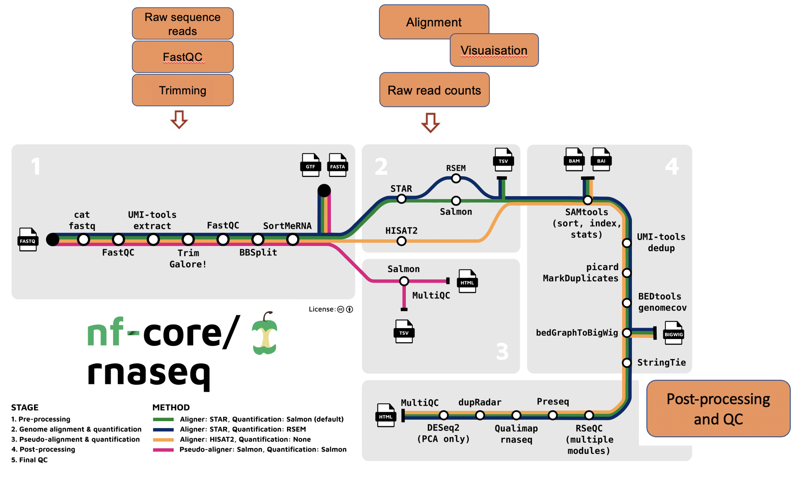

Recap of Day 1: Raw sequence to counts
Questions
- How to use nfcore-rnaseq pipeline for differential expression analysis?
Objectives
- Recap Day 1: nfcore-rnaseq pipeline

- What is RNA sequencing and what are the main applications of RNA-seq?
- What are the typical steps in a RNA-seq differential expression analysis pipeline?
- Why do we require workflow managers such as nextflow for bioinformatics pipelines?
- How to run the nfcore-rnaseq pipeline on the Pawsey Nimbus VM?
- What are the important features of the nfcore-rnaseq pipeline?
- What to do next; using the gene-count matrix?
Notes
1↩︎ Here is a list of ‘nfcore pipelines’.
Key points
- We generated a gene-count matrix using the nfcore-rnaseq pipeline, using a single command.
- The gene-count matrix will be used today for identifying differentially expressed genes.
All materials copyright Sydney Informatics Hub, University of Sydney